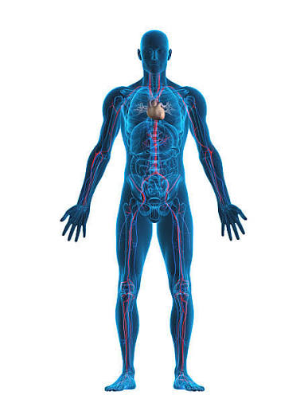
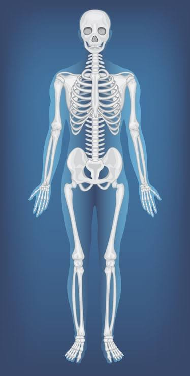
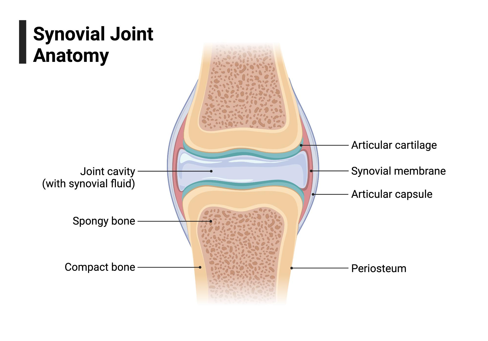
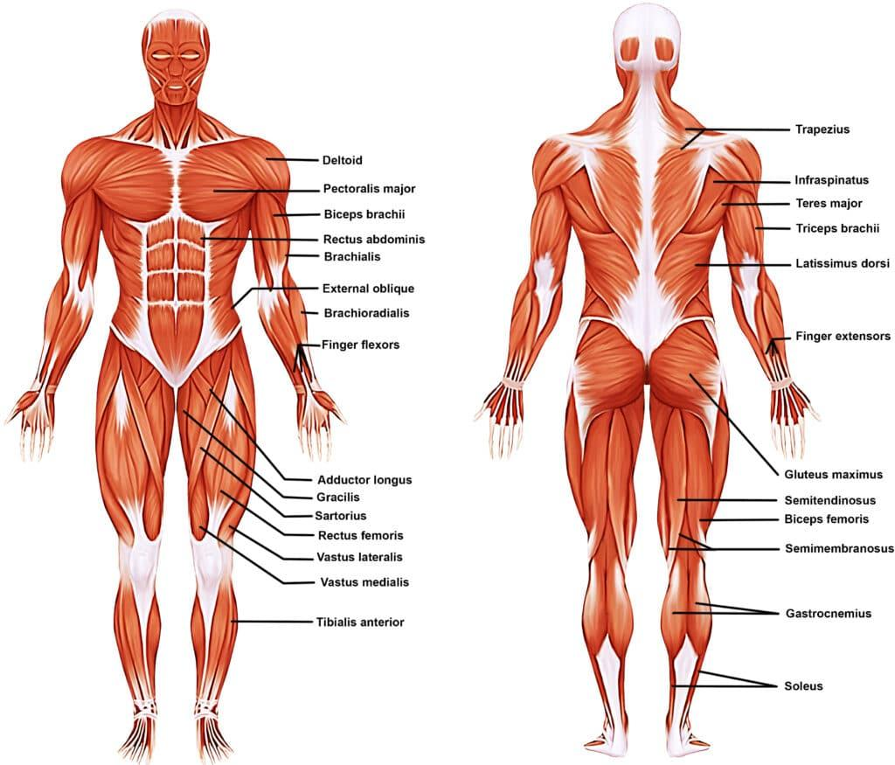
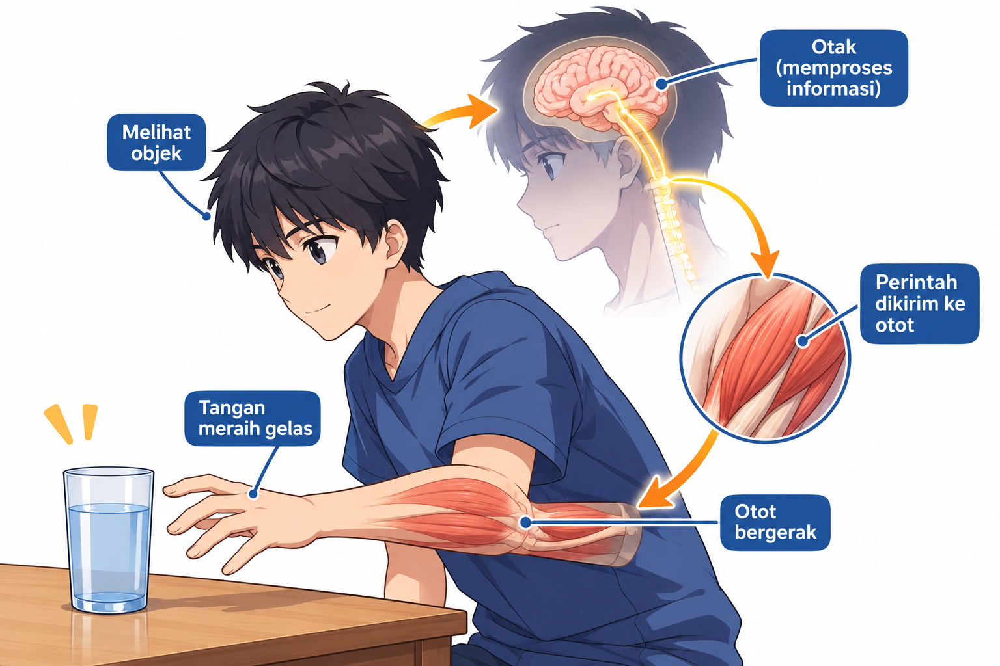
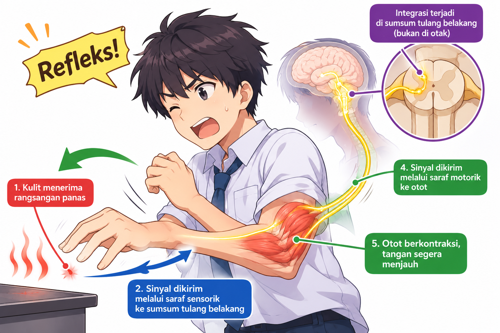

Mengenal Sistem Saraf dan Sistem Gerak Manusia
Pelajari bagaimana tubuh menerima rangsangan, mengolah informasi, dan menghasilkan gerakan melalui sistem saraf dan sistem gerak.
Mulai belajar
Sistem Saraf Manusia
Sistem saraf menerima rangsangan, mengolah informasi, dan mengatur respons tubuh.

Bagian Sistem Saraf
1. Sistem Saraf Pusat (SSP)
- Otak: mengolah informasi dan mengatur berbagai aktivitas tubuh.
- Sumsum tulang belakang: menghubungkan otak dengan tubuh dan berperan dalam gerak refleks.
2. Sistem Saraf Tepi (SST)
- Saraf sensorik: membawa informasi dari reseptor menuju sistem saraf pusat.
- Saraf motorik: membawa perintah dari sistem saraf pusat menuju efektor.
Neuron
Neuron adalah sel khusus yang menerima dan menghantarkan impuls saraf.
Menerima rangsangan atau sinyal.
Mengatur aktivitas sel saraf.
Menghantarkan impuls menjauhi badan sel.
Sistem Gerak Manusia
Sistem gerak terdiri dari tulang, sendi, dan otot yang bekerja sama menghasilkan gerakan.

Tulang
Menopang tubuh, melindungi organ, dan menjadi tempat melekatnya otot. Tulang termasuk alat gerak pasif.

Sendi
Penghubung antartulang yang memungkinkan tubuh melakukan berbagai jenis gerakan.

Otot
Alat gerak aktif yang berkontraksi dan menarik tulang melalui tendon.
Jenis Sendi Berdasarkan Gerak
- Sinartrosis: tidak dapat digerakkan.
- Amfiartrosis: dapat bergerak terbatas.
- Diartrosis: dapat bergerak bebas.
Contoh Gerakan Siku
Saat siku ditekuk, otot bisep berkontraksi dan otot trisep relatif relaks. Saat siku diluruskan, otot trisep berkontraksi dan bisep relatif relaks.
Alur Gerak Sadar
Contoh sederhana proses ketika seseorang memutuskan untuk mengangkat tangan.

Tekan mulai untuk melihat urutan proses.
Bagaimana Gerak Refleks Terjadi?
Gerak refleks merupakan respons cepat dan otomatis terhadap rangsangan.

Urutan Lengkung Refleks
- Reseptor menerima rangsangan.
- Neuron sensorik membawa impuls.
- Sumsum tulang belakang memproses informasi.
- Neuron motorik mengirim perintah.
- Otot memberikan respons.
Contoh: menarik tangan secara otomatis ketika menyentuh benda panas.
Uji Pemahamanmu
Jawab lima pertanyaan singkat tentang sistem saraf dan sistem gerak.
PERTANYAAN 1 / 5
Bagian sistem saraf pusat yang mengolah informasi adalah...
Pilih salah satu jawaban.